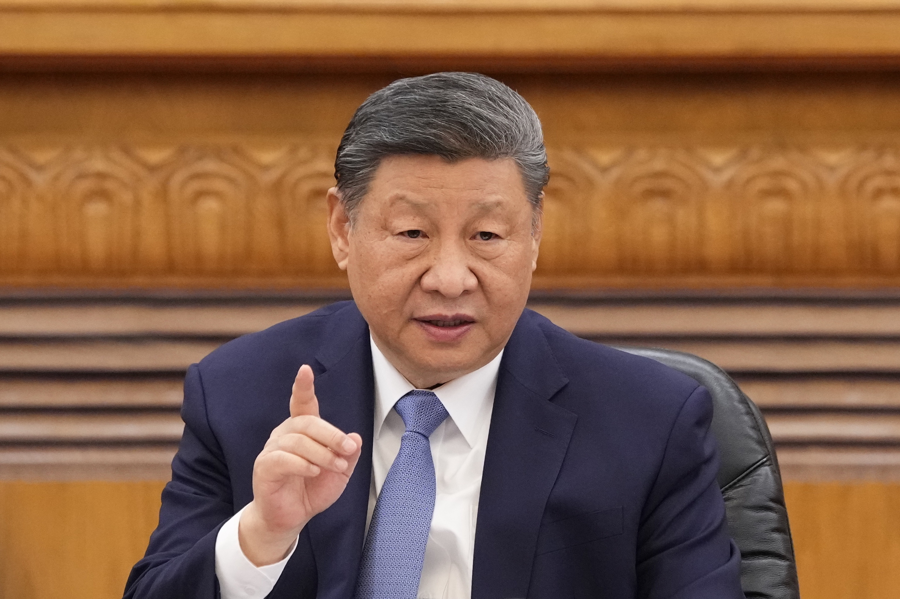

China intensifica la guerra comercial con EE.UU. y bloquea nuevas entregas de Boeing
15 de abril de 2025 — En un nuevo capítulo de la creciente tensión comercial entre China y Estados Unidos, el gobierno chino ordenó a sus aerolíneas suspender la recepción de nuevos aviones Boeing, así como también las compras de repuestos y equipos aeronáuticos de origen estadounidense. La medida surge como represalia directa a los recientes aranceles impuestos por Washington, que elevan hasta un 145% los gravámenes sobre productos chinos.
Como respuesta, China aplicó tarifas del 125% a las importaciones estadounidenses, lo que prácticamente duplica el costo de los aviones Boeing para las compañías aéreas chinas.
La decisión representa un duro golpe para Boeing, que considera a China uno de sus mercados más estratégicos. La empresa proyectaba casi 9.000 entregas de aeronaves al país asiático en las próximas dos décadas. Analistas estiman que la interrupción de entregas podría impactar en hasta 1.200 millones de dólares el flujo de caja de la compañía en 2025. De hecho, ya se habrían paralizado alrededor de 10 entregas del modelo 737 Max que estaban listas para clientes chinos.
Frente a esta situación, el gobierno chino evalúa medidas de apoyo para las aerolíneas locales que operan aviones Boeing, especialmente en lo referido a mantenimiento y leasing, cuyos costos se han disparado por los aranceles.
Esta disputa podría favorecer a Airbus, el principal competidor europeo de Boeing, que viene ganando participación en el mercado asiático y ahora podría consolidarse aún más frente a las restricciones impuestas al fabricante estadounidense.
No obstante, la tensión también impacta a la propia industria aeronáutica china. El fabricante estatal COMAC, responsable del avión C919, depende en gran parte de componentes estadounidenses. De continuar el conflicto, el desarrollo de una industria aeronáutica autosuficiente en China podría verse comprometido.
Con un comercio bilateral que superó los 650 mil millones de dólares en 2024, economistas advierten que la continuidad de estas medidas podría llevar a un estancamiento total de las relaciones comerciales entre ambas potencias.